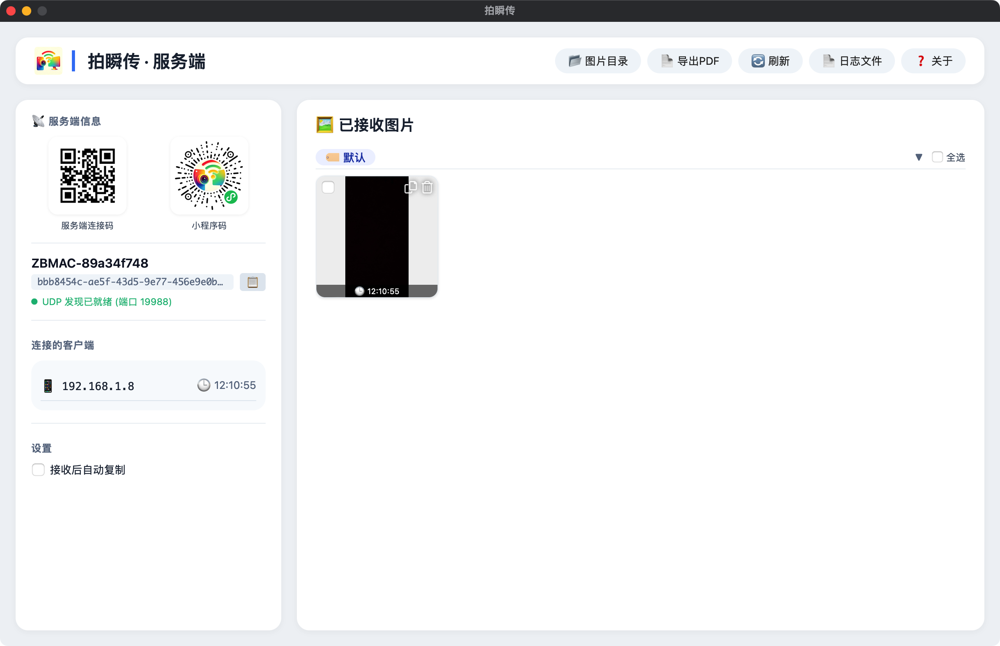
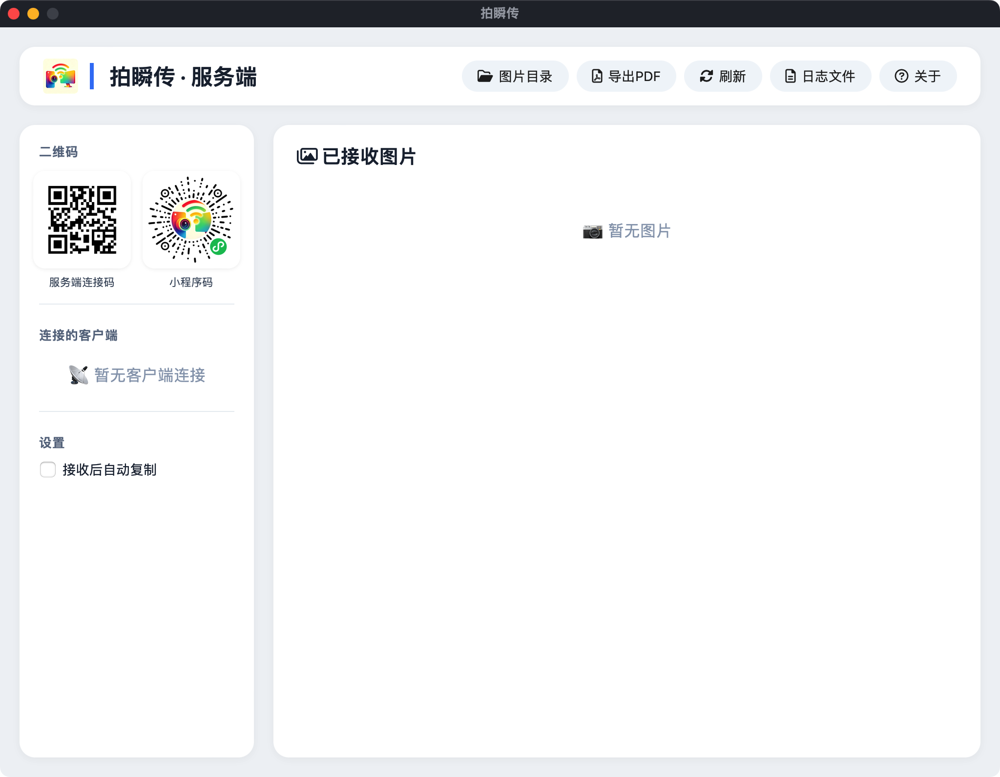
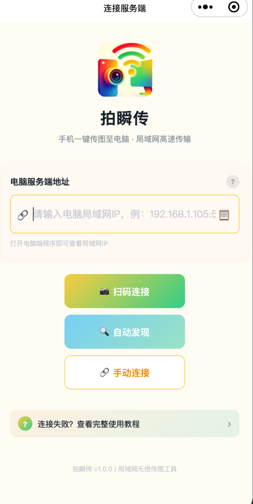
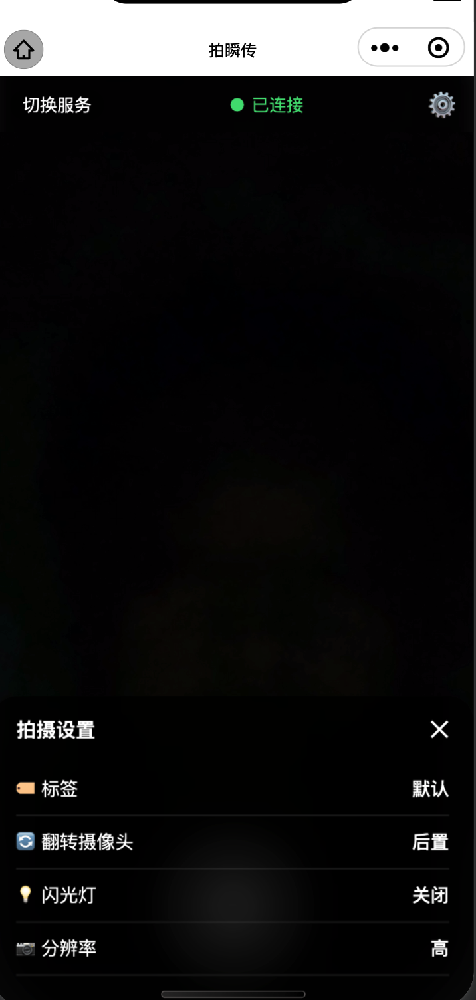

手机拍照，瞬间抵达电脑 · 纯局域网无损传图工具

纯局域网直连，不消耗手机流量，无需公网服务器，传输速度更快
拍照上传零压缩，保留原始分辨率和细节，适合打印或存档
支持自定义标签，照片自动分组存储，告别杂乱的电脑文件夹
桌面端兼容 Windows、macOS、Linux，一个工具全家通用
数据仅在局域网传输，不上传任何云端服务器，你的照片你做主
多张图片合并为PDF，方便归档、打印或分享

下载并运行桌面端，自动显示二维码和IP

微信扫码小程序「拍瞬传」，扫码配对

点击拍照，照片自动按标签保存到电脑
支持 Windows / macOS / Linux，根据您的系统选择对应版本
版本 v5.0.0 · 跨平台支持
Windows .exe · macOS .app · Linux 可执行文件
请按以下顺序排查：
上传失败通常与网络或端口有关：
从 GitHub Releases 下载最新版本，替换旧文件即可。图片保存目录（~/拍瞬传图片）不受影响。
不会。 拍瞬传是纯局域网工具，所有照片仅在手机与电脑之间传输，不上传任何云端服务器，您的隐私完全由自己掌控。
桌面端支持：
小程序端支持 iOS 14+ / Android 7.0+。